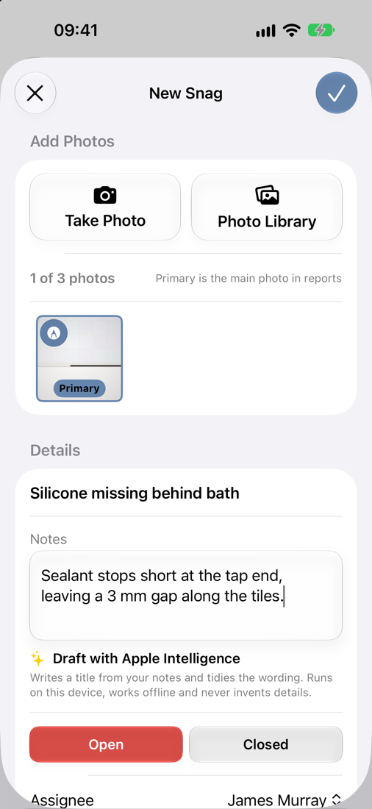
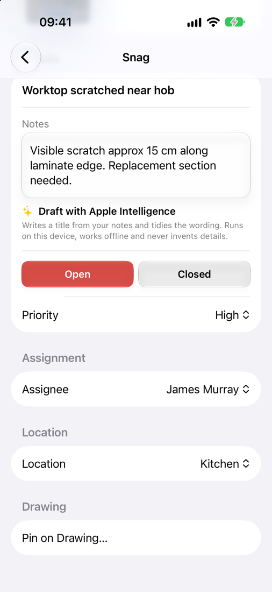
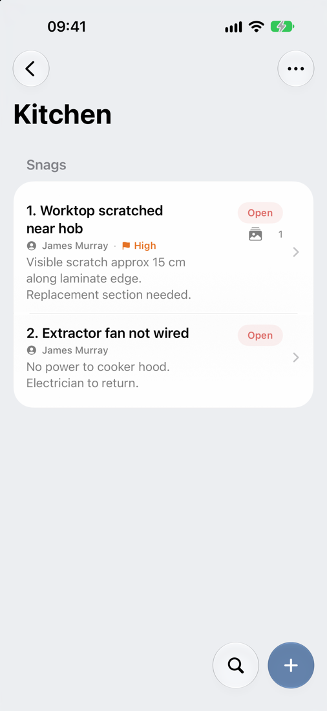
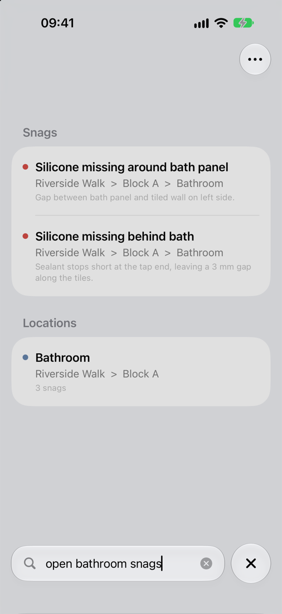
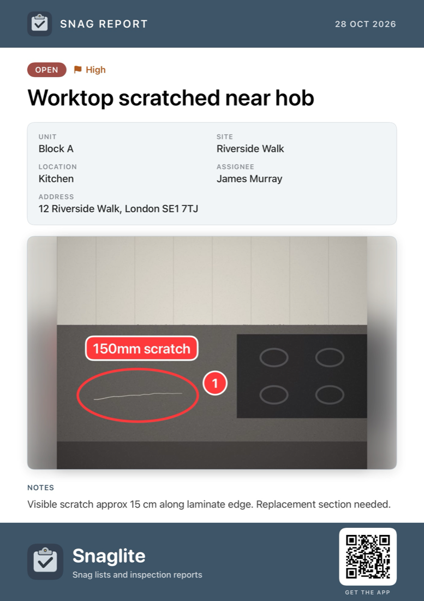

Working with Snags
A snag is an individual defect or issue recorded in a specific location. Each snag can have a title, notes, up to three photos, a status, a priority, an assignee and a pin on a drawing.
A good snag is:
- clear and specific
- recorded in the correct location
- supported by photos where needed
- kept up to date as work progresses
Creating a snag
- Open the site, then the unit, then the location.
- Tap +.
- Tap Take Photo or Photo Library to add up to three photos.
- Enter a short title and any notes.
- Set the status, priority and assignee as needed.
- Tap the tick to save.
You can also add a snag from a unit’s All Snags list (you will be asked which location it belongs to), or straight from a drawing. See Attachments and Drawings.
If you close a new snag before saving it, Snaglite asks whether to discard it or keep editing, so nothing is lost by accident.

Writing a good snag title
The title should say what is wrong and, where useful, exactly where.
Scratch to internal face of entrance door – redecorate complete panel
Door damaged
If you would rather write notes first, type what you see into the notes and tap Draft with Apple Intelligence. It writes a title and tidies the wording for you. See Notes and Markdown.
Status, priority and assignee
Status
- Open – the issue still needs attention.
- Closed – the issue has been completed or resolved.
Status drives the progress bars, the Inspection Hub counts, filters and reports, so keep it up to date.
Priority
Priority is optional. Choose Low, Medium, High or Critical, or leave it as None. High and Critical snags are highlighted in lists, on reports and in Portfolio Insights.
Assignee
The person, trade or company responsible for the snag, such as Main Contractor, Joiner or Electrician. Choose from your saved assignees (see Settings and Assignees). If the site has a default assignee, new snags start with it.

Editing a snag
Tap a snag to open it. Changes are saved automatically. From here you can:
- change the title and notes
- add, remove or mark up photos, and choose the Primary photo used on reports
- change the status, priority and assignee
- move the snag to another location in the same unit, or create a new location for it
- pin it on a drawing, or move or remove its pin
If the same snag is changed on another device while you are editing it, Snaglite tells you and lets you reload the saved version or keep your draft.

Snag lists
Snags are numbered in each list. The same numbers are used in reports and on drawing pins. Each row shows the status, assignee, priority, a preview of the notes and how many photos are attached.
- Swipe right to Mark Closed or Reopen.
- Swipe left to Assign or Delete.
- Press and hold to preview the primary photo, with Share Snag, Mark Closed, Assign and Delete.
- ⋯ → Filter shows only open or only closed snags.
- ⋯ → Select lets you set the status, assign, set the priority, move or export several snags at once.


All Snags, Missing Photos and Recent Snags
All Snags (at the top of a unit’s locations) shows every snag in the unit with its location. The Missing Photos and Recent Snags tiles on the Inspection Hub show the same kind of list across all your active sites.
Searching
Tap the magnifying glass next to + to search. On the Sites screen, search looks through every site, unit, location and snag. Inside a site, unit or location, it searches just that part.
You can type naturally. For example:
open bathroom snagsclosed plot 12unassigned
In a snag list you can also search for no photos, high priority or critical.
Results show where each item is, for example Riverside Walk › Block A › Bathroom.

Sharing a single snag
To send one snag to someone quickly, press and hold it and choose Share Snag. Snaglite creates a branded image showing the status, priority, title, unit, site, location, assignee, address, photos and notes. You can send it by Messages, Mail or WhatsApp, or save it to Photos.
The image uses your marked-up photos, so annotations and pins are included.

Good practice
- Keep each snag to one issue
- Do not combine unrelated defects into one snag
- Use photos where they make the issue clearer
- Use consistent assignee names
- Close snags promptly when the work is complete
- Keep High and Critical for items that really are urgent, so they stand out